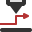

Urutan
Saat komponen laser sedang diatur alatnya (lihat Alur Kerja Komponen), TecZone Laser menghitung Urutan tekukan di mana pengaturan alat untuk komponen tersebut harus dipotong. Pada tingkat dasar, bukaan pada komponen harus dipotong terlebih dahulu sebelum kontur luar dipotong.
Saat rancangan sedang disusun baik oleh mesin nesting, atau secara interaktif dengan menambahkan atau mengedit komponen dalam rancangan, TecZone Laser menghitung urutan di mana semua pengaturan alat di seluruh komponen dalam rancangan diproses. Opsi yang umum adalah pengaturan alat diproses komponen demi komponen (pengaturan alat bagian dalam dan kontur luar dari satu komponen dipotong sebelum melanjutkan ke komponen berikutnya). Ada juga opsi pengurutan lainnya, dan ini dapat dikontrol menggunakan pengaturan Urutan Laser.
Urutan yang dihitung secara otomatis ini (baik untuk komponen maupun rancangan) dapat diperiksa atau diubah menggunakan Navigator Urutan.
Navigator Urutan
Navigator Urutan muncul di tepi kanan jendela TecZone Laser saat kita bekerja dengan komponen atau rancangan laser. Anda dapat membuka atau menutupnya menggunakan tombol Z.

Pada gambar ini, navigator urutan digunakan untuk mengedit urutan rancangan. Di sini, urutan komponen demi komponen telah dihitung dan Anda dapat melihat urutan komponen yang akan diproses.
Anda dapat membuka salah satu node komponen ini (seperti node 1 (lyly) 4 yang telah dibuka), dan Anda kemudian dapat melihat pemotongan laser individual dalam komponen tersebut. Pemotongan laser yang telah kita klik (ditandai dengan nomor urut 66 pada gambar) disorot dengan warna biru. Semua pengaturan alat yang telah dilakukan sebelum pemotongan ini ditampilkan dengan warna putih atau merah muda (warna merah muda menunjukkan bahwa pengaturan alat tidak stabil dan dapat jatuh melalui slat).
Garis perpindahan dari pengaturan alat sebelumnya ke pengaturan alat yang dipilih, serta garis perpindahan dari pengaturan alat ini ke pengaturan alat berikutnya ditampilkan untuk konteks.
Menyusun ulang pengaturan alat
Anda dapat mengklik node yang mewakili komponen lengkap, atau node yang mewakili pemotongan laser individual, lalu menyeretnya ke atas atau ke bawah untuk menyusun ulang pengaturan alat. Saat Anda melakukannya, Traverse time akan dihitung dan segera diperbarui, lalu ditampilkan di bagian bawah navigator urutan. Anda dapat kembali ke urutan asli dengan mengklik ikon Revert all changes di navigator urutan.
Anda juga dapat menggunakan tombol Urutan interaktif untuk mengubah urutan pengaturan alat:

Untuk mengatur urutan, cukup Ctrl+Klik pada angka-angka sesuai urutan yang diinginkan untuk memprosesnya. Sering kali, Anda hanya ingin mengubah beberapa komponen lokal dari urutan tersebut, dan hal itu juga dapat dilakukan. Pada ilustrasi di bawah ini, urutannya tetap dipertahankan hingga item 8, lalu hanya mengubah komponen setelahnya.

Untuk melakukannya dengan mudah, Anda dapat mengklik angka 8 terlebih dahulu (tanpa menahan tombolCtrl ) dan urutan hingga titik tersebut akan diterima (ditampilkan sebagai lingkaran abu-abu). Kemudian, Anda dapat Ctrl+Klik pada angka berikutnya untuk menambahkannya ke urutan dalam susunan yang sama. Anda dapat melihat urutan yang dimodifikasi terbentuk melalui klik-klik berikutnya di atas.
Anda juga dapat menggambar garis kasar yang menunjukkan alur perkiraan di mana Anda ingin melakukan pemotongan komponen. Untuk melakukannya, Alt+Klik pada lembar dan seret mouse untuk membuat kurva (ditunjukkan pada gambar di bawah kiri).

Setelah selesai menggambar kurva urutan, klik sekali lagi, dan komponen akan diurutkan mengikuti jejak yang telah Anda gambar (seperti yang ditunjukkan pada gambar di atas kanan).
Ikon urutan

Elemen tampilan Peringatan di bagian bawah muncul jika ada petunjuk peringatan. Klik elemen tampilan ini berulang kali untuk menyorot setiap .
Elemen tampilan kontur miring menunjukkan kontur yang mungkin jatuh melalui slat. Klik elemen tampilan ini berulang kali untuk menyorot semua kontur yang mungkin miring.
Berikut adalah simbol-simbol lain yang muncul di navigator urutan. Simbol-simbol ini digunakan untuk menyesuaikan tampilan hierarki item pengaturan alat, menyimulasikan urutan, dan menyesuaikannya dengan cara lain.
Ikon |
Arti |
|
Putar simulasi. |
|
Hentikan simulasi pada posisinya saat ini. |
|
Putar balik simulasi ke awal. |
|
Ciutkan navigator urutan ke kanan. |
|
Perluas navigator urutan ke kiri. |
|
Batalkan semua perubahan yang telah dibuat pada urutan, dan kembalikan ke kondisi semula. |
|
Ini adalah mode khusus untuk mengedit urutan secara interaktif. Klik ikon untuk mengaktifkannya. |
|
Perluas semua urutan pengaturan alat untuk semua komponen. Hal ini memungkinkan Anda melihat dengan mudah pengaturan alat yang sedang dilakukan. Misalnya, penandaan atau kontur dalam. |
|
Ciutkan semua urutan pengaturan alat yang terbuka. |
|
Ketika opsi tautan dipilih, perubahan yang dilakukan pada urutan atau perutean yang dilakukan di satu tempat secara otomatis akan diulang di tempat lain yang identik. Ini sebaiknya diaktifkan jika Anda ingin perubahan yang dilakukan pada suatu komponen secara otomatis disalin ke komponen lain yang memiliki pengaturan alat dan urutan yang sama. |
|
Head laser ke bawah. |
|
Head laser dengan gerakan laser ping-pong, juga gerakan Z yang sinkron. Saat aktif, jalur perpindahan ditandai dengan warna violet pada lembaran. Ini akan dimatikan dalam kasus tertentu untuk mengurangi risiko terbalik dan benturan. |
 |
Pergerakan kepala mesin ke atas tanpa gerakan bolak-balik/ping-pong. TecZone Laser memilih gerakan ini ketika kepala ke atas jika pola ping-pong dapat menyebabkan kemiringan. |
|
Perpindahan ke pemotongan berikutnya terjadi dengan gas bantuan dihidupkan. |
|
Perpindahan ke pemotongan berikutnya terjadi dengan gas bantuan dimatikan. |
|
Komponen jatuh melalui slat. |
|
Komponen tetap berada di slat. |
|
Komponen miring dan menempel di antara slat. |
|
Pierce only. Berlaku jika Laser processing sequence diatur ke persyaratan di mana pelubangan untuk semua kontur dilakukan terlebih dahulu (yaitu, Pierce then Cut, Pierce > Mark > Cut, atau Mark > Pierce > Cut). |
|
Kontur dalam. |
|
Kontur luar. |